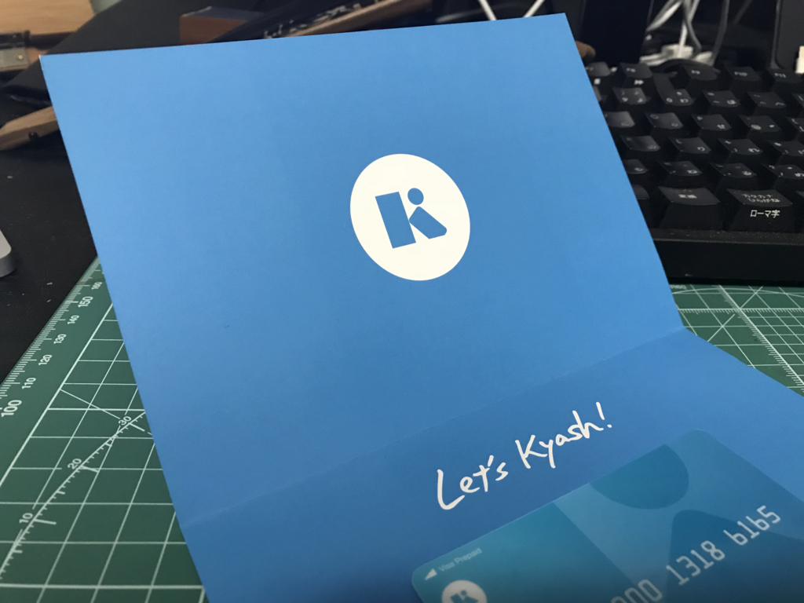
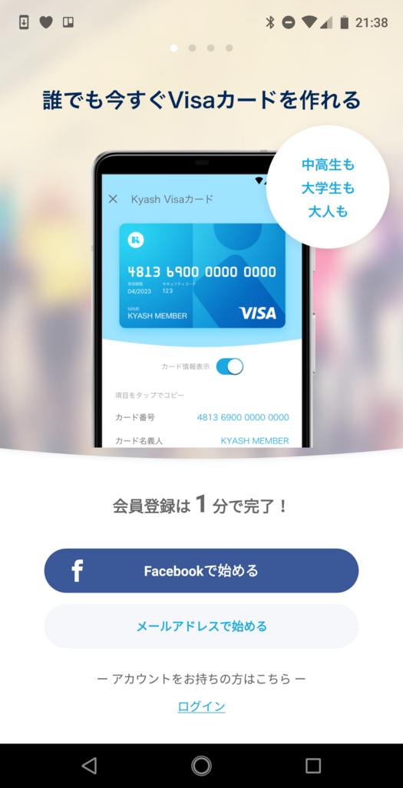
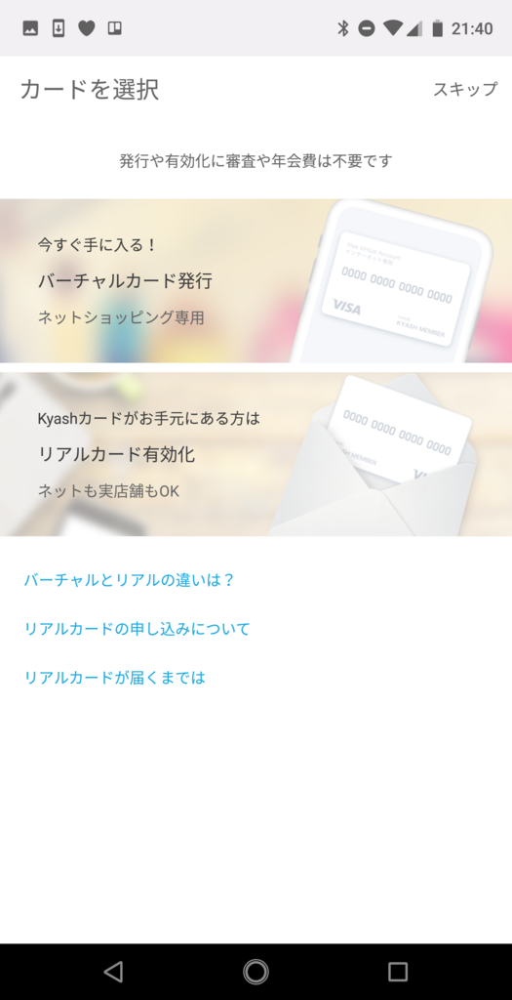

6月18日：Kyash のカードがきたので登録したら 7,000 円ゲットしてホクホクした
公開日：
- 6月15日（金）：なにをしたか覚えてない。たぶん仕事頑張った。プロ生愛媛の LT を準備
- 6月16日（土）：@jz5 と大街道で昼飯を食って、プロ生愛媛。 翌日1時ぐらいまで飲み歩いてた
- 6月17日（日）：のんびり。部屋の掃除したり、洗濯したり、ゴロゴロアニメみたり
- 6月18日（月）：仕事頑張った。プロ生の反省ブログを書いた。Kyash のカードがきたので、登録を済ませる
- 6月19日（火）：仕事頑張った。買い物して、日本 vs コロンビアに備える（帰りにポストから出てきた税金・健康保険関係の書類を見て卒倒）。前半に2点決められたら TV 消して寝るつもり

すっかり忘れてたのだけど、Kyash でクレジットカードを頼んでいたのがきたので、さっそくユーザー登録してみた。
Kyash（キャッシュ）というのはいわゆる「ウォレットアプリ」で、
- 登録ユーザー同士で資金移動が可能
- 割り勘や少額のやり取りに使える
- Kyash 口座にはコンビニやペイジー、クレカでチャージできる
- クレジットカード（物理・バーチャル）を発行してもらえる
- Kyash 口座に入ってるおカネで、物理店舗・ネットショップ決済が可能
- カードブランドは Visa
- 審査はない（Visa デビッドと一緒？）なので、規約の範囲で誰でもすぐに持てる
- 海外では使えない、限度額が低いなど制限が結構多いのであくまで少額向け？
みたいな感じ。個人的には1番目の個人間決済が魅力なのだけど、サービスに閉じてなくて、クレカで外の世界とつながってるのは結構いいなって思う。ネットサービスだからネットで使いやすいのは当たり前だけど、預けたおカネがリアルで使いにくいのは困る。その点、Kyash は物理カードがあるおかげで、リアルで使えていい。まだ使ったことないけど。
 


届いたクレカの有効化はマジで1分以内で行える。名前が KYASH MENBER になってるのが気に入らないけど、これでリアル店舗でも使えるようになった。
ID を友人に教えると、こうやって身に覚えのない請求を送り付けることができる。
— daruyanagi.json（気味が悪い (@daruyanagi) 2018年6月18日
もちろんリジェクトすることが可能。「ふぁっきゅー」というコメントを付けて削除した。
巻き上げたぜー＼(^o^)／ pic.twitter.com/26oizzKDg9
— daruyanagi.json（気味が悪い (@daruyanagi) 2018年6月18日
すると、貸しにしてたおカネが振り込まれてきた＼(^o^)／
この分だけ、物理カードでも買い物ができるというわけだな。オートチャージの設定をしておけば、自動で足りない分をチャージしてくれたりもするらしい。試しに Google Pay のカードに追加してみたら、一時的に200円引き出されて（カードの有効性確認のためなのですぐに戻ってくる）登録が完了した。
Kyash を登録してみたけど EP-1 はやっぱりダメだなー pic.twitter.com/IfbTfc9Gwn
— daruyanagi.json（気味が悪い (@daruyanagi) 2018年6月18日
Google Pay でも使えるといいんだけど、ウチの端末（Essential Phone EP-01）ではダメだった。まぁ、これはわかってたことで、しょうがない。
Kyash ユーザーが周りにいたら、割り勘でも使ってみたいなーと思う。
追記
しまった、脳内で読み替えて（ https://t.co/gMmnHNoA88
— だるやなぎ 帝国元帥 (@daruyanagi) 2018年6月21日